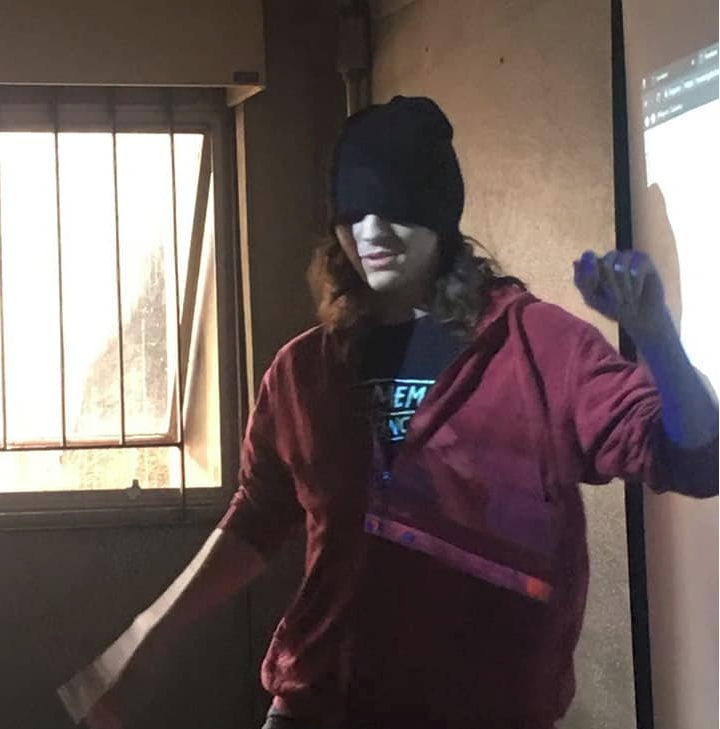

John Schmitz Bretas
Eu na última apresentação
No terceiro e penultimo ano no instituto federal de São Paulo, John é um garoto de 17 anos que não brinca em serviço.
Adoro magic e e jogos em geral, jogo magic a quase 3 anos, e pretendo ser juiz até 2020.
Também me interesso por programação em geral, desde algoritimos obscuros pra calcular a raiz inversa de um numero somente com operações inteiras até a parte de automação de processos do nosso dia-a-dia.
Email: johngc2010@hotmail.com
Github: John Schmitz